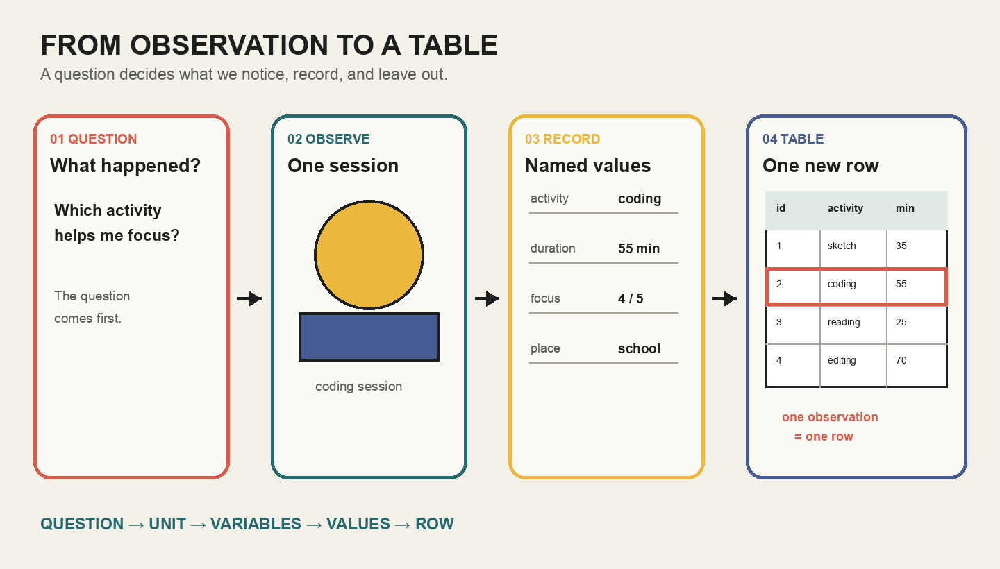

이미지 생성 경험을 관찰 가능한 데이터의 구조로 번역하기
오늘의 학습 목표
- 데이터가 질문, 관찰, 기록의 순서로 만들어진다는 점을 설명할 수 있습니다.
- 한 사례에서 관찰 단위, 변수, 값, 메타데이터를 서로 구분할 수 있습니다.
- 관찰한 사실과 관찰 뒤에 붙인 해석을 다른 문장으로 작성할 수 있습니다.
- Dear Data가 개인의 일상을 어떤 규칙으로 기록하고 시각화했는지 설명할 수 있습니다.
- The Library of Missing Datasets를 통해 기록의 선택과 누락, 데이터의 비중립성을 설명할 수 있습니다.
- 하나의 질문을 실제로 기록 가능한 데이터 명세로 바꿀 수 있습니다.
- 0-6분8주차 연결
포스터 한 장을 하나의 기록으로 다시 읽습니다.
- 6-15분데이터가 되는 과정
질문, 관찰, 기록의 순서를 구분합니다.
- 15-25분기록의 문법
관찰 단위, 변수, 값, 메타데이터를 찾습니다.
- 25-35분Dear Data
일상 기록이 시각 언어가 되는 공식 사례를 읽습니다.
- 35-43분누락된 데이터
선택과 누락이 만드는 관점을 살펴봅니다.
- 43-50분데이터 명세
질문을 기록 가능한 한 문장으로 정리합니다.
- 50-60분확장 활동
중간고사 결과를 세 행의 표로 설계합니다.
수업 운영: 기본 50분과 확장 60분
기본 50분에는 중간고사 연결, 데이터가 되는 과정, 핵심 용어, 두 공식 사례, 데이터 명세까지 진행합니다. 설명과 개별 확인이 빠르게 끝난 경우에만 50-60분 확장에서 자신의 생성 포스터 세 장을 가상의 표로 바꿉니다. 확장은 새로운 문법을 추가하지 않고 오늘의 개념을 한 번 더 적용합니다.
프로그래밍을 몰라도 먼저 붙잡을 문장
데이터는 숫자 그 자체가 아니라, 누군가가 어떤 질문을 위해 무엇을 어떤 기준으로 기록한 결과입니다. 오늘은 계산하거나 그래프를 그리지 않습니다. 기록의 구조와 맥락을 정확히 읽는 것이 먼저입니다.
0-6분 · 8주차 생성 포스터를 표로 다시 보기
8주차 중간고사에서는 하나의 규칙을 유지하면서 시드, 도형 수, 크기 기준, 팔레트와 같은 매개변수를 바꾸어 생성 포스터 시리즈를 만들었습니다. 그때는 이미지가 최종 결과물이었습니다. 9주차에는 포스터를 만든 과정 자체를 기록으로 다시 봅니다.
| 포스터 | seed | shape_count | palette | 관찰한 인상 |
|---|---|---|---|---|
| A | 17 | 12 | warm | 중앙이 조밀함 |
| B | 31 | 20 | cool | 가장자리가 활발함 |
| C | 52 | 8 | mono | 여백이 넓음 |
이 표에서 포스터 한 장은 한 행이 되고, 반복해서 비교하려는 항목은 열이 됩니다. seed와 shape_count는 코드가 이미 알고 있던 값이지만, “중앙이 조밀함”은 사람이 이미지를 보고 정한 기록입니다. 하나의 표 안에도 자동으로 남은 값과 사람이 판단해 남긴 값이 함께 있을 수 있습니다.
내 중간고사 결과에서 남길 수 있는 항목 찾기
자신의 포스터 한 장을 떠올리고, 코드에서 바로 찾을 수 있는 값 두 개와 이미지를 보고 판단해야 하는 값 한 개를 적습니다. 결과물이 없어도 위 표의 A 포스터를 기준으로 답할 수 있습니다.
확인: 포스터의 파일명도 데이터가 될 수 있는가?
될 수 있습니다. 파일명이 각 포스터를 구분하는 식별자라면 하나의 열로 기록할 수 있습니다. 다만 final.png처럼 모든 파일에 같은 이름을 쓰면 구분 기능이 없으므로 좋은 식별자가 아닙니다.
6-15분 · 데이터는 질문, 관찰, 기록을 거쳐 만들어진다
교실에 의자가 스무 개 있다는 사실만으로는 아직 수업에 쓸 데이터셋이 생기지 않습니다. “수업 중 어느 좌석이 자주 사용되는가?”라는 질문을 정하고, 수업 한 회를 관찰하고, 좌석 번호와 사용 여부를 같은 규칙으로 기록해야 비교 가능한 데이터가 됩니다. 질문이 달라지면 관찰하고 기록할 항목도 달라집니다.

| 질문 | 주로 관찰할 것 | 기록하지 않을 수 있는 것 |
|---|---|---|
| 어떤 활동이 집중에 도움이 되는가? | 활동 종류, 지속 시간, 집중도 | 사용한 색의 개수 |
| 어떤 색을 자주 사용하는가? | 주요 색, 보조 색, 사용 횟수 | 활동 전의 기분 |
| 어느 환경에서 작업을 오래 하는가? | 장소 유형, 시작 시각, 지속 시간 | 완성 이미지의 크기 |
질문에 포함되지 않은 항목이 중요하지 않다는 뜻은 아닙니다. 이번 기록의 범위에서 선택되지 않았다는 뜻입니다. 따라서 데이터셋을 읽을 때는 “무엇이 들어 있는가?”와 함께 “어떤 질문으로 만들었으며 무엇이 들어 있지 않은가?”를 물어야 합니다.
확인: 관찰한 모든 것을 기록하면 가장 좋은 데이터가 되는가?
그렇지 않습니다. 목적 없이 모든 것을 모으면 기준이 섞이고 개인정보나 불필요한 정보까지 포함될 수 있습니다. 먼저 질문을 정하고 답에 필요한 범위만 일관된 기준으로 기록하는 편이 더 명확하고 책임 있는 방법입니다.
15-25분 · 관찰 단위, 변수, 값, 메타데이터
표를 읽기 전에 네 용어를 구분하면 복잡한 데이터도 작은 문장으로 나눌 수 있습니다. “2026년 5월 5일의 코딩 활동은 55분 동안 이어졌고 집중도는 4였다”라는 기록을 예로 봅니다.
| 용어 | 쉬운 질문 | 예 | 표에서 주로 보이는 위치 |
|---|---|---|---|
| 관찰 단위 | 한 번의 기록은 무엇인가? | 한 번의 창작 활동 | 한 행이 대표함 |
| 변수 | 매번 같은 기준으로 무엇을 묻는가? | 활동, 지속 시간, 집중도 | 열 이름이 대표함 |
| 값 | 이번 관찰에서 실제로 무엇이 기록되었는가? | coding, 55, 4 | 각 셀에 들어감 |
| 메타데이터 | 이 기록을 올바르게 읽으려면 무엇을 더 알아야 하는가? | 기록자, 기간, 집중도 1~5의 뜻 | 표 밖 설명 또는 별도 문서 |
메타데이터는 “데이터에 관한 데이터”입니다. 집중도 4라는 값만 보면 4점 만점인지 5점 만점인지 알 수 없습니다. 1은 매우 낮음, 5는 매우 높음이라는 척도 설명이 있어야 다른 사람이 값을 같은 방식으로 읽을 수 있습니다.
관찰한 사실과 해석을 구분하기
사실은 정한 기준으로 직접 확인한 내용이고, 해석은 그 사실에 의미나 원인을 붙인 설명입니다. “작업 시간이 55분이었다”는 기록된 사실에 가깝고, “코딩이 재미있어서 오래 작업했다”는 원인을 추론한 해석입니다. 둘 다 쓸 수 있지만 같은 열에 섞지 않고 표현을 구분해야 합니다.
| 기록된 사실 | 가능한 해석 | 추가로 필요한 정보 |
|---|---|---|
| 수정 횟수 12회 | 작업이 어려웠다 | 수정 이유, 난이도 자기평가 |
| 집중도 5 | 장소가 조용해서 집중했다 | 소음 수준, 장소 정보 |
| 참고 자료 사용 | 혼자 해결하지 못했다 | 사용 목적과 도움의 종류 |
확인: “집중도 4”는 사실인가, 해석인가?
기록자가 미리 정한 1~5 척도에 따라 그 시점에 4라고 기록했다는 것은 사실입니다. 그러나 집중이라는 상태를 완전히 객관적으로 측정한 값은 아닙니다. 자기평가 방식과 시점이라는 맥락을 함께 적어야 합니다.
확인: 한 행에 포스터 두 장을 함께 기록해도 되는가?
관찰 단위를 “포스터 한 장”으로 정했다면 두 장을 한 행에 섞지 않습니다. 포스터마다 한 행을 만들면 같은 열을 기준으로 비교할 수 있습니다. 관찰 단위를 “포스터 시리즈 한 묶음”으로 정했다면 구조가 달라질 수 있으므로 단위를 먼저 명시해야 합니다.
25-35분 · 공식 사례 1: Dear Data
Dear Data는 Giorgia Lupi와 Stefanie Posavec가 1년 동안 매주 서로 다른 일상 주제를 기록하고 손으로 시각화한 엽서를 주고받은 프로젝트입니다. 중요한 점은 그림의 모양만이 아닙니다. 매주 무엇을 데이터로 볼지 질문하고, 어떤 기호로 기록할지 규칙을 설계하고, 뒷면의 범례로 그 규칙을 설명했다는 점입니다.
Dear Data: The Project ↗
공식 프로젝트 설명과 여러 주의 기록 주제를 함께 봅니다. “한 주의 불평”, “웃음”, “휴대전화 사용”처럼 일상의 행동과 감정이 어떤 관찰 규칙을 통해 데이터가 되었는지 확인합니다.
- 질문
- 이번 주에 무엇을 알아보려 했는가?
- 관찰 단위
- 한 번의 행동인가, 하루인가?
- 범례
- 모양·색·선은 어떤 값을 뜻하는가?
MoMA: Dear Data ↗
미술관 소장품 페이지에서 실제 엽서의 앞면과 뒷면을 비교합니다. 앞면의 시각 패턴만 보지 말고, 뒷면 범례가 없다면 어떤 정보를 해석할 수 없는지 찾습니다.
- 앞면
- 개별 값이 시각 기호로 놓인 화면
- 뒷면
- 기호와 기록 기준을 설명하는 메타데이터
- 핵심
- 아름다운 모양과 읽을 수 있는 규칙의 결합
그림보다 먼저 규칙 찾기
- 공식 페이지에서 엽서 한 장을 고릅니다.
- 무엇을 관찰했는지 한 문장으로 적습니다.
- 색이나 모양 하나가 어떤 값을 뜻하는지 범례에서 찾습니다.
- 이 기록만으로는 알 수 없는 내용을 한 가지 적습니다.
확인: Dear Data는 그림이므로 데이터가 아닌가?
그렇지 않습니다. 반복해서 관찰한 사건을 정한 기준으로 기록하고, 각 값을 일관된 기호에 연결했기 때문에 데이터와 시각화의 구조를 갖습니다. 손으로 그렸는지 코드로 그렸는지는 데이터 여부를 결정하지 않습니다.
35-43분 · 공식 사례 2: 기록되지 않은 것도 의미가 있다
미디어 아티스트 Mimi Ọnụọha의 The Library of Missing Datasets는 사회적으로 중요하지만 수집되지 않거나 접근하기 어려운 데이터 목록을 물리적 파일 캐비닛의 형태로 다룬 작업입니다. 이 사례는 빈칸이 단순한 실수만은 아니며, 제도와 권한, 비용, 분류 기준에 따라 어떤 현실은 기록되고 어떤 현실은 보이지 않게 될 수 있음을 생각하게 합니다.
Mimi Ọnụọha 공식 웹사이트 ↗
작가의 공식 기록에서 프로젝트와 작업 맥락을 확인합니다. 목록에 무엇이 있는지만 읽지 않고, 왜 해당 데이터가 빠져 있을 수 있는지를 질문합니다.
Art21: Mimi Ọnụọha ↗
작가 소개와 인터뷰 자료를 통해 데이터 수집이 기술적 행동에 그치지 않고 사회의 관심과 권한을 반영한다는 관점을 살펴봅니다.
데이터는 완전히 중립적인 재료가 아니다
누가 질문을 정했는지, 어떤 대상을 포함했는지, 어떤 값을 측정했는지, 무엇을 누락했는지에 따라 같은 현실도 다른 표가 됩니다. 이는 모든 데이터가 거짓이라는 뜻이 아닙니다. 선택의 기준과 한계를 함께 밝혀야 신뢰할 수 있다는 뜻입니다.
| 질문 | 확인할 내용 | 창작 활동 기록의 예 |
|---|---|---|
| 누가 만들었는가? | 기록자와 기관 | 수강생 본인의 자기기록 |
| 왜 만들었는가? | 목적과 원래 질문 | 활동과 집중의 관계 탐색 |
| 무엇을 포함했는가? | 대상, 기간, 변수 | 24회의 활동과 10개 열 |
| 무엇이 빠졌는가? | 결측값과 애초에 없는 변수 | 일부 집중도, 함께한 사람 정보 |
확인: 빈 셀과 아예 없는 열은 같은 누락인가?
다릅니다. 빈 셀은 해당 변수를 기록하려 했지만 특정 관찰에서 값이 없음을 뜻합니다. 아예 없는 열은 그 변수를 처음부터 수집하지 않았음을 뜻합니다. 3교시에는 두 차이를 이용해 “답할 수 없는 질문”을 작성합니다.
43-50분 · 질문을 기록 가능한 데이터 명세로 바꾸기
좋은 데이터 질문은 흥미로운 것에 그치지 않고 실제로 기록할 수 있어야 합니다. “나는 언제 창의적인가?”는 범위가 넓습니다. “2주 동안 한 번의 창작 활동마다 활동 종류, 지속 시간, 시작 전후 기분을 기록했을 때 어떤 활동에서 기분 변화가 큰가?”로 바꾸면 관찰 단위와 필요한 변수가 보입니다.
| 관심 | 기록 가능한 질문 | 관찰 단위 | 필요한 변수 |
|---|---|---|---|
| 집중 | 활동 종류에 따라 자기평가 집중도가 달라지는가? | 한 번의 활동 | activity, focus_level |
| 시간 | 요일별 작업 지속 시간은 어떻게 다른가? | 한 번의 활동 | date, duration_min |
| 참고 자료 | 참고 자료를 사용한 활동과 사용하지 않은 활동의 수는 각각 몇 개인가? | 한 번의 활동 | used_reference |
한 문장의 데이터 명세 작성
다음 빈칸을 채웁니다. “나는 기간 동안 관찰 단위마다 변수 2~4개를 기록하여 질문을 살펴본다. 이 기록에는 포함하지 않을 정보를 넣지 않는다.”
확인: “나의 하루를 기록한다”는 충분한 데이터 명세인가?
아직 부족합니다. 하루 전체에서 무엇을 한 번의 관찰로 볼지, 어떤 항목을 어떤 기준으로 적을지, 기록 기간은 얼마인지가 없습니다. “7일 동안 한 번의 이동마다 이동 목적, 소요 시간, 교통수단을 기록한다”처럼 좁혀야 합니다.
50-60분 · 확장: 중간고사 포스터 세 장을 미니 데이터셋으로 설계하기
기본 학습을 모두 마친 경우에만 진행합니다. 자신의 포스터 세 장 또는 위의 A·B·C 예시를 사용합니다. 실제 CSV를 만들 필요는 없고 종이나 메모 앱에 표의 구조만 설계합니다.
- 관찰 단위를 “생성 포스터 한 장”으로 적습니다.
- 행 세 개에 포스터 A, B, C를 놓습니다.
- 열 네 개 이상을 정합니다. 코드에서 얻는 값 두 개와 사람이 관찰하는 값 한 개를 포함합니다.
- 각 열의 값이 숫자, 범주, 문자열 중 무엇인지 예상합니다.
- 표만으로 답할 수 있는 질문 하나와 추가 정보가 필요한 질문 하나를 적습니다.
확장 활동의 완료 기준
세 행, 네 열, 관찰 단위 한 문장, 답할 수 있는 질문 한 개, 답할 수 없는 질문 한 개가 있으면 완료입니다. 시각적으로 꾸미는 활동이 아니라 다음 교시의 표 구조를 예측하는 활동입니다.
수업 후 개별 복습
- 데이터가 만들어지는 세 단계를 질문 → 관찰 → 기록 순서로 말합니다.
- “한 번의 창작 활동, 지속 시간, 55분, 기록 기간”을 관찰 단위·변수·값·메타데이터에 각각 연결합니다.
- Dear Data에서 범례가 메타데이터 역할을 하는 이유를 한 문장으로 적습니다.
- 빈 셀과 애초에 수집하지 않은 열의 차이를 설명합니다.
- 자신이 기록하고 싶은 질문 하나를 관찰 단위와 변수 두 개가 보이도록 고쳐 씁니다.
다음 교시 예고
2교시에는 오늘 정한 관찰 단위가 표의 한 행이 되고, 변수가 열이 되며, 값이 셀에 들어가는 구조를 CSV와 pandas의 DataFrame으로 확인합니다.